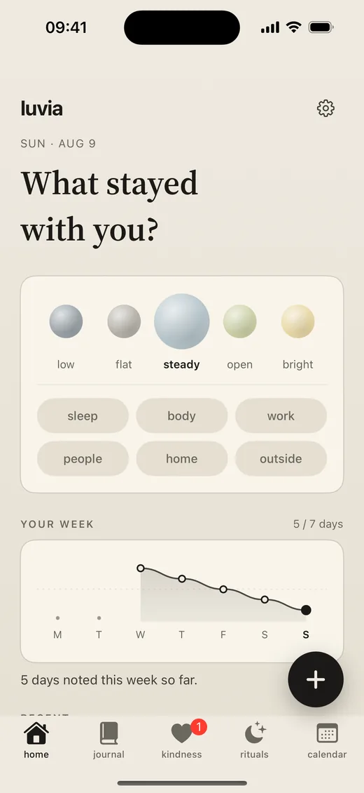

funciones
Tu día de calma en una sola app.
Registro de ánimo, diario, gratitud y un reloj de meditación, con tus datos a salvo en tu dispositivo: un lugar tranquilo para tu bienestar diario, con una función estrella construida en torno a la amabilidad.
No sustituye al apoyo de salud mental. Luvia no es terapia, atención médica, apoyo en crisis ni atención de emergencia.
registro de ánimo
Pon nombre al ánimo. Observa el patrón.
Elige un ánimo, añade etiquetas sencillas y deja que el gráfico de la semana muestre los pequeños cambios con el tiempo. No se trata de puntuarte, sino de mirar tu clima interior con un poco más de amabilidad.
Un calendario mensual reúne ánimos, notas, gratitud, sesiones y Kind messages en un resumen tranquilo para que los patrones se vean sin presión.


diario y gratitud
Escribe esa pequeña verdad.
Añade unas palabras sinceras sobre el día y guarda una nota de gratitud cuando algo merezca la pena. Sin público, sin rachas, sin indicaciones que te digan cómo sentirte.
Adjunta una foto cuando una imagen lo diga todo. Todo se queda en privado en tu dispositivo.
reloj de meditación
Vuelve a respirar y reencuéntrate con el día.
Elige la duración de la sesión y deja que el temporizador sencillo haga el resto. Unas campanas opcionales marcan el inicio y el final para que puedas cerrar los ojos del todo. Sin voz guiada, sin puntuación: solo un minuto de calma y descanso cuando lo necesites.

privacidad de datos
Tus datos se quedan en tu dispositivo.
Guardado en local
Las entradas del diario, los registros de ánimo, las notas de gratitud y las sesiones de respiración viven en tu dispositivo.
Descarga tus datos
Exporta todo lo que has escrito cuando quieras. Tus reflexiones son tuyas y puedes llevártelas en cualquier momento.
Sin anuncios ni rastreo
Luvia no muestra anuncios ni te rastrea en otras apps o sitios web. Tus reflexiones nunca se usan para publicidad.
la función estrella
Kind messages, sin nombres.
Envía algo que llevas dentro o acompaña la nota de otra persona cuando lo necesites. Anónimo, moderado y pensado para el cuidado, no para la interacción constante.
aviso importante
Luvia no es atención médica ni apoyo en crisis.
Si crees que podrías hacerte daño o hacérselo a otra persona, contacta de inmediato con los servicios de emergencia locales o con alguien de confianza. Luvia está pensada para la reflexión y el apoyo diario y amable, no para el diagnóstico, el tratamiento ni la ayuda de emergencia.